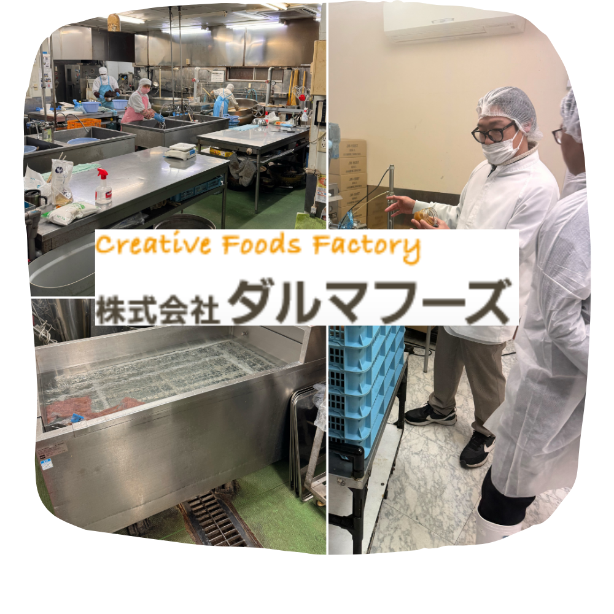

Loading...
POTAGE とは
江戸時代から同じ土地で育てられ続けてきた伝統野菜は、形や大きさがバラバラですが、栄養価が非常に高く、個性ある風味を楽しむことができます。
また、農薬を使わないため、土壌菌など野菜の生育に必要な多くの微生物が生息しています。このように生物の多様性が豊かになると、農地がとても肥沃になり、栄養価の高い野菜を育てることができます。
ですが現在主流のF1野菜は、品種改良を重ねてきた結果、栄養価が大きく低下してしまいました。実際に、日本食品標準成分表によると、1950年と2015年の比較で、ほうれん草の鉄分は100g中13mgから2mgと、 なんと85％も減少しています。ニンジンや大根などそのほかの野菜でも約80%以上の減少が報告されています。
また、野菜は土壌からミネラルや栄養素を吸収します。ですが根っこからうまく吸収するには土壌菌が必要です。F1野菜が主流になってからは、化学肥料や農薬の使用によって土壌菌が大幅に減少し、生物の多様性が失われつつあります。
そのため野菜はミネラルや栄養素を吸収しずらくなってきており、これもF1野菜の栄養価が下がった原因になっております。
ちなみに生物の多様性が失われると食べ物の多様性も失われていきます。100年前は、様々な品種の食べ物がありましたが、今はほとんど残っていません。
地球上の農場の約66％は、たった9種類の作物を作るためだけに使われています。スーパーに行っても、年中同じような食材が並んでいます。
食べ物の多様性が失われた分、私たちの腸内の微生物も少なくなりました。それに伴い、私たちの体も弱くなりました。 人口が増え、食糧危機と言われている今、野菜を多く作れたとしても、その中身が空っぽ（栄養価がほとんどない）ならば、本末転倒です。
伝統野菜農家は大きく減少してしまっております。理由は形や大きさがバラバラで、知名度も低いので購入する方が少ないからです。
そこで私たちは伝統野菜単体ではなく、付加価値をつけて販売し、その魅力を広げていくことで伝統野菜を食べる文化を創りたいと考えております
また、農薬を使わないため、土壌菌など野菜の生育に必要な多くの微生物が生息しています。このように生物の多様性が豊かになると、農地がとても肥沃になり、栄養価の高い野菜を育てることができます。
ですが現在主流のF1野菜は、品種改良を重ねてきた結果、栄養価が大きく低下してしまいました。実際に、日本食品標準成分表によると、1950年と2015年の比較で、ほうれん草の鉄分は100g中13mgから2mgと、 なんと85％も減少しています。ニンジンや大根などそのほかの野菜でも約80%以上の減少が報告されています。
また、野菜は土壌からミネラルや栄養素を吸収します。ですが根っこからうまく吸収するには土壌菌が必要です。F1野菜が主流になってからは、化学肥料や農薬の使用によって土壌菌が大幅に減少し、生物の多様性が失われつつあります。
そのため野菜はミネラルや栄養素を吸収しずらくなってきており、これもF1野菜の栄養価が下がった原因になっております。
ちなみに生物の多様性が失われると食べ物の多様性も失われていきます。100年前は、様々な品種の食べ物がありましたが、今はほとんど残っていません。
地球上の農場の約66％は、たった9種類の作物を作るためだけに使われています。スーパーに行っても、年中同じような食材が並んでいます。
食べ物の多様性が失われた分、私たちの腸内の微生物も少なくなりました。それに伴い、私たちの体も弱くなりました。 人口が増え、食糧危機と言われている今、野菜を多く作れたとしても、その中身が空っぽ（栄養価がほとんどない）ならば、本末転倒です。
伝統野菜農家は大きく減少してしまっております。理由は形や大きさがバラバラで、知名度も低いので購入する方が少ないからです。
そこで私たちは伝統野菜単体ではなく、付加価値をつけて販売し、その魅力を広げていくことで伝統野菜を食べる文化を創りたいと考えております
私達について
初めまして、宇都宮大学 認定企業の株式会社Ferment Baseです。
私たちは、「優れた日本の伝統を残しつつ、そこに付加価値を付け、新しい文化を創造することを目標に取り組んでいます。
会社名
株式会社Ferment Base
代表取締役
平松光幸
設立日
2023年6月23日
所在地
栃木県宇都宮市陽東7-1-2
宇都宮大学工学部CDI北棟
事業内容
食品の開発
プロジェクトメンバー
代表取締役 宇都宮大学大学院生
平松 光幸
取締役
礒部 達也
執行役員
合田 圭佑
白鴎大学 インターン
菅野 良太
白鴎大学 インターン
田村 南
株式会社フードアンドパートナーズ 様
松本農園 様
株式会社ミツボシフーズ 様
SEEDS OF LIFE
Mr John Moore
パタゴニア日本法人 元社長
POTAGEの特徴
創る人も新里ネギも牛乳も全て栃木県産。
栃木の恵を詰め込んだ最高峰のポタージュです。
江戸時代から続く
松本農園の新里ねぎ
栽培に約13ヶ月かかる幻のネギ！
新里ねぎは栄養価が高く、食味は、他の一般的な一本ねぎや近代育種技術による曲がりねぎと比べ、柔らかく、甘みが強く、青葉も美味しく、生で食べても辛味が少ないのが特徴です。
松本農園は、栃木県宇都宮市新里町にある江戸時代から続く伝統農家です。緑豊かな自然に恵まれた土壌で、先祖伝来の農業を営んでいます。
千本松牧場の生乳
東京ドーム178個分の敷地を持つ千本松牧場。
千代田区と同じ大きさというこの広大な
土地で、1893年から土づくり、牧草づくりからこだわり、500頭もの健康に育てた乳牛から搾った新鮮で良質な生乳。
その生乳を低温長時間殺菌(一般的な高温短時間殺菌に比べ、栄養素が損なわれにくく、生乳に近い淡い香りと甘味、コクが楽しめます)にした牛乳を利用しております。
POTAGE 第二弾
大阪府の伝統野菜。日本に一番最初に入ってきた玉ねぎ「泉州黄玉ねぎ」
東京都の伝統野菜。ジャガイモの原種の遺伝子に近いじゃがいも「治助イモ」
愛知県の伝統野菜。昔ながらの美味しい味がすると評判のトマト「ファーストトマト」
この３つの伝統野菜を利用したオリジナルポタージュを現在開発しております。
